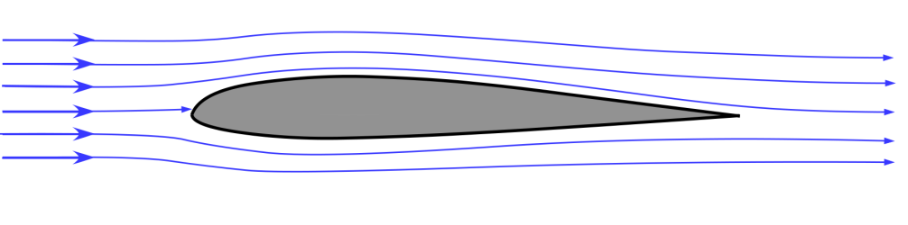

2 Linear Least Squares Problems
We begin our exploration of scientific machine learning methods in the fundamental setting of linear regression problems. The intended learning outcomes of these notes are that students should be able to:
Classify a regression problem as linear or nonlinear
Understand the abstract form of linear least squares problems
Define the abstract form of linear least squares problems and be able to explain what its key ingredients are
Translate a description of a model learning problem in words into a specific instance of the abstract form
Construct examples of linear least squares problems, cast them in the abstract form, and explain their context
2.1 Classifying regression problems as linear vs nonlinear
We have previously introduced regression problems in a general way: recall that the three ingredients of (parametrized) regression problems are (1) paired input and output data, (2) the choice of a parametrized model class, and (3) a method for choosing a model from within that class. The classification of a regression problem as linear or nonlinear depends solely on ingredient (2), the parametrized model class: if the models in that class depend linearly on the model parameters, the regression problem is a linear regression problem.
The function \(f(z;\theta): \mathbb{R}^d\times\Theta\to\mathbb{R}\) is said to be linear in the parameters \(\theta\) if, for all \(a,b\in\mathbb{R}\) and all \(\theta_1,\theta_2\in\Theta\), the following holds: \(f(z; a\theta_1 + b\theta_2) = af(z;\theta_1) + bf(z;\theta_2)\).
Note that when we say a function is “linear”, we have to specify in what. That is, we can also say \(f(z;\theta)\) is linear in the inputs if, for all \(a,b\in\mathbb{R}\) and all \(z_1,z_2\in\mathbb{R}^d\), the following holds: \(f(az_1 + bz_2;\theta) = af(z_1;\theta)+bf(z_2;\theta)\).
The classification of regression problems as linear or nonlinear depends solely on the dependence of the functions in the parametrized model class on the parameters. That is, we can define functions that are linear in \(\theta\) while being nonlinear in \(z\).
Consider the model classes (Equation 1.1)-(Equation 1.3) introduced previously. Are these model classes linear or nonlinear in the parameters? In the inputs?
2.2 Mathematical problem formulation
We are now going to introduce an abstract mathematical problem formulation that can be used to describe many specific instances of linear regression problems. This is a theme of the course and throughout computational mathematics and engineering: abstraction using the language of mathematics lets us isolate the core essence of the problem we’re solving and develop powerful algorithms that can solve specific applications of those problems across a wide range of disciplines. I’ll introduce the abstract formulation first, and follow it up with some specific examples.
Ingredient 1 (the data set): let \(\{(z_i,y_i)\}_{i=1}^N\) be a given data set of paired inputs \(z_i\in\mathbb{R}^d\) and outputs \(y_i\in\mathbb{R}\).
Ingredient 2 (the parametrized model class): let \(x:\mathbb{R}^d\to\mathbb{R}^n\) be a function that maps the \(d\)-dimensional input to an \(n\)-dimensional feature vector. For a fixed \(x\), we will consider the following parametrized model class:
\[ \mathcal{F}_\beta := \{ x(z)^\top \beta : \beta\in\mathbb{R}^n\} \qquad(2.1)\]
Recall that Equation 2.1 is read as “\(\mathcal{F}_\beta\) is defined to be the set of all functions \(f(z;\beta) = x(z)^\top\beta\) for all \(\beta\in\mathbb{R}^n\).” This is an abstract way to define the model class for any linear regression problem, as we will describe in more detail shortly.
Ingredient 3 (the method of choosing the parameters): let \(\beta^*\) be given by
\[ \begin{aligned} \beta^* &= \arg\min_{\beta\in\mathbb{R}^n} \frac1N \sum_{i=1}^N (f(z_i;\beta) - y_i)^2 \\ &= \arg\min_{\beta\in\mathbb{R}^N} \frac1N \sum_{i=1}^N (x(z_i)^\top\beta - y_i)^2. \end{aligned} \qquad(2.2)\] Then, we define the learned model to be \(f(z;\beta^*) = x(z)^\top\beta^*\). We call \(\beta^*\) defined this way the “optimal regression parameters” or just the “optimal parameters”, because they are the result of solving an optimization problem. Note that the objective of this optimization function is defined by the data, and represents the average squared error of the model over the data set.
Taken together, the three ingredients I have defined above define a linear least squares problem, which is a subclass of linear regression problems. We’ll now give several examples of specific instances of linear least squares problems to illustrate how broadly applicable this abstract framework is.
2.3 Examples
2.3.1 Example 1: Aerodynamic drag prediction

An important task in aerodynamic design is predicting lift and drag forces on a body moving through air. Let’s consider a simplified problem where we are given an fixed airfoil design and our goal is to predict the drag force \(F_d\) on the airfoil as a function of three parameters which describe its flight conditions:
- The angle of attack \(\alpha\)
- The density of the fluid \(\rho\)
- The freestream velocity of the air \(v\)
To put this problem in our abstract framework, we define \(z = (\alpha,\rho,v)^\top\) to be a three-dimensional input, and take the output to be the drag force \(y= F_d\). In order to define a regression problem, we require the existence of a data set \(\{(z_i,y_i)\}_{i=1}^N\). Note that in this case \(z_i = (\alpha_i,\rho_i,v_i)\). We assume that this data set is given.
In linear regression problems, defining the model class amounts to choosing a set of regression features by defining \(x\). A simple choice takes the inputs themselves to be features: \(x^{(1)}(z) = z = (\alpha,\rho,v)^\top\). This leads to a class of parametrized models with a three-dimensional unknown parameter vector \(\beta\in\mathbb{R}^3\). The models in this class have the following form:
\[ f^{(1)}(z;\beta) = x^{(1)}(z)^\top\beta = (\alpha,\rho,v) \beta = \beta_1\alpha + \beta_2\rho + \beta_3 v. \]
There are many other possible choices. For example, consider \(x^{(2)}(z) = (\alpha,\rho, v, \alpha^2, \rho^2, v^2, \alpha\rho, \alpha v, \rho v)^\top\). This leads to a parametrized model class with a nine-dimensional unknown parameter vector \(\beta\in\mathbb{R}^9\):
\[ \begin{aligned} f^{(2)}(z;\beta) &= x^{(2)}(z)^\top\beta = (\alpha,\rho, v, \alpha^2, \rho^2, v^2, \alpha\rho, \alpha v, \rho v)\beta \\ &= \beta_1\alpha + \beta_2\rho + \beta_3 v + \beta_4\alpha^2 + \beta_5\rho^2 + \beta_6 v^2 + \beta_7\alpha\rho + \beta_8\alpha v + \beta_9 \rho v \end{aligned} \]
For either the above choices of features \(x^{(1)}(z)\) or \(x^{(2)}(z)\), we could then define and solve the minimization Equation 2.2 to find the optimal regression parameters and define our learned model \(f^{(1)}(z;\beta^*)\) or \(f^{(2)}(z;\beta^*)\).
Note that we use \(\beta\) to denote the unknown parameters in both \(f^{(1)}\) and \(f^{(2)}\) above despite \(\beta\) referring to different quantities in the definition of the different functions. This is a common notational shortcut — while we could use the notation \(\beta^{(1)}\in\mathbb{R}^3\) and \(\beta^{(2)}\in\mathbb{R}^9\) to specify the different \(\beta\) for the different functions, this can be cumbersome if we are considering many different options for the choice of features \(x(z)\), and it’s standard to just use \(\beta\), where the definition of \(\beta\) is implied by the context. One of the challenges in learning about machine learning and computational mathematics more generally is getting used to similar notation meaning different things in different contexts. That’s one of the things that we’ll practice in this course.
2.3.2 Example 2: something else
2.3.3 Example 3: something else
2.4 Solution via normal equations
Suppose we have taken \(N\) real-life samples of the input variables and their corresponding drag-force, \(F_d\). Let each sample of the system under various operating conditions form row of a matrix \(\mathbf{X} \in \mathbb{R}^{N \times 4}\) for the inputs and a matrix \(\mathbf{Y} \in \mathbb{R}^N\) for their corresponding outputs:
\[ \mathbf{X} = \begin{bmatrix} 1 & \alpha_1 & \rho_1 & v_1 \\ 1 & \alpha_2 & \rho_2 & v_2 \\ & & \vdots & \\ 1 & \alpha_N & \rho_N & v_N \end{bmatrix} , \mathbf{Y} = \begin{bmatrix} F_{d1} \\ F_{d2} \\ \vdots \\ F_{d3} \end{bmatrix} \]
We can efficiently compute the predictions of \(h(\mathbf{X}; \beta)\) with a simple matrix-vector multiplication:
\[ \hat{\mathbf{Y}} = \mathbf{X} \beta = \begin{bmatrix} 1 & \alpha_1 & \rho_1 & v_1 \\ 1 & \alpha_2 & \rho_2 & v_2 \\ & & \vdots & \\ 1 & \alpha_N & \rho_N & v_N \end{bmatrix} \begin{bmatrix} \beta_0 \\ \beta_1 \\ \beta_2 \\ \beta_3 \end{bmatrix} = \begin{bmatrix} \beta_0 + \beta_1 \alpha_1 + \beta_2 \rho_1 + \beta_3 v_1 \\ \beta_0 + \beta_1 \alpha_2 + \beta_2 \rho_2 + \beta_3 v_2 \\ \vdots \\ \beta_0 + \beta_1 \alpha_N + \beta_2 \rho_N + \beta_3 v_N \end{bmatrix} \in \mathbb{R}^N \]
Because the squared 2-Norm can be rewritten as an inner product, we can rewrite this loss-function as:
\[ L(\beta) = ||\mathbf{X} \beta - \mathbf{Y}||_2^2= (\mathbf{X} \beta - \mathbf{Y})^\top (\mathbf{X} \beta - \mathbf{Y}) \] \[ = (\beta^\top \mathbf{X}^\top - \mathbf{Y}^\top) (\mathbf{X} \beta - \mathbf{Y}) \]
\[ = \beta^\top \mathbf{X^\top X} \beta - 2 \beta^\top \mathbf{X^\top \mathbf{Y}} + \mathbf{Y^\top Y}\]
As we learned in multivariable calculus, to find a the extrema of a continuous function, we need to identify the critical points of the function. This means setting the gradient of the loss-function equal to the zero-vector:
\[ \nabla L_\beta = 2 \mathbf{X^\top X} \beta - 2 \mathbf{X^\top Y} = \mathbf{0}\]
Solving this equation for \(\beta\) yields only one critical point:
\[ \hat{\beta} = (\mathbf{X^\top X})^{-1} \mathbf{X^\top Y} \]
To check whether this point is a local minimum, maximum, or neither, we examine the nature of the Hessian:
\[ \nabla^2 L_\beta = 2 \mathbf{X^\top X} \]
Because the Hessian is symmetric positive semidefinite and does not depend on \(\beta\), this means that \(L(\beta)\) is convex everywhere. Hence, \(\hat{\beta}\) must be a global local minimum.
2.5 Assessing the learned models
various metrics, notion of a test data set. k-fold cross-validation for class?
2.6 Exercises
a few relatively short questions that test the learning outcomes.
2.7 Further reading
any appropriate links